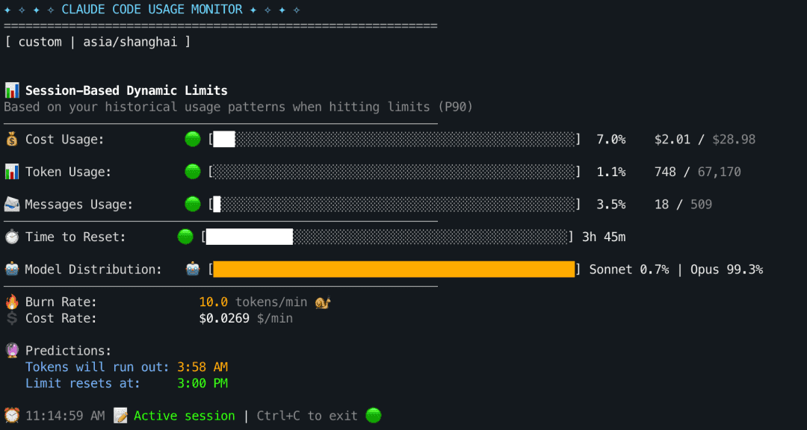
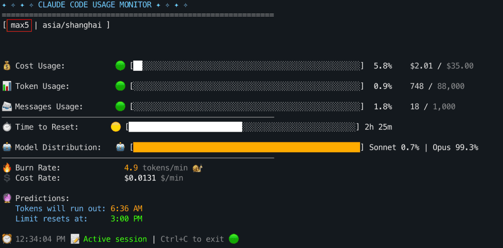
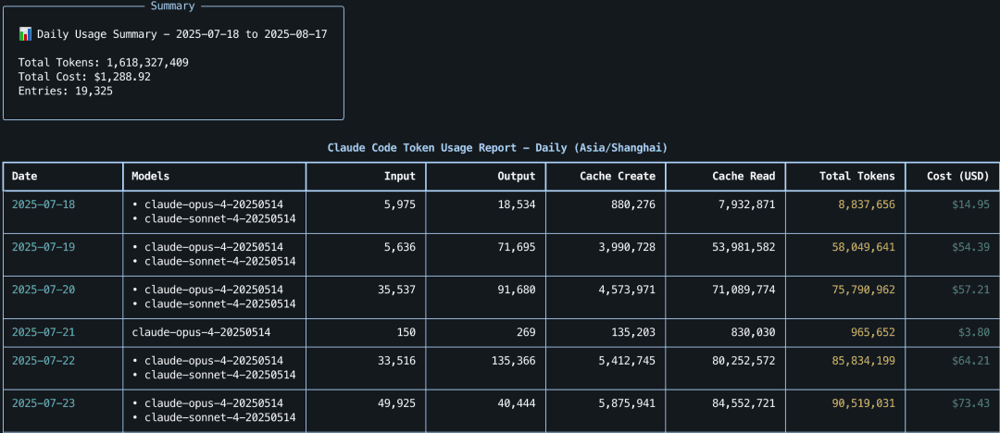
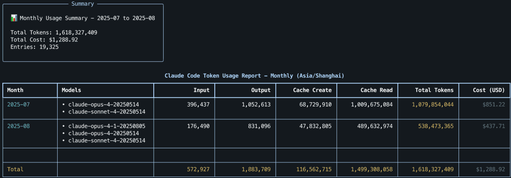
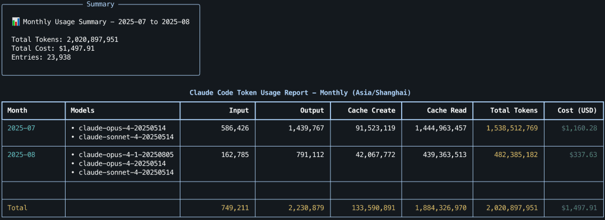
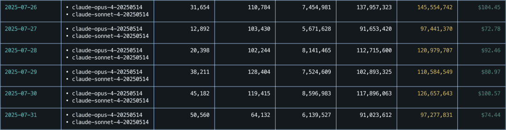

claude-monitor 用量监控
在使用 Claude Code 时，我经常会冒出一些困惑：“当前会话到底还剩多少 Token 用量？最初的问题是几点问的？什么时候这次会话才会重置？”。这让我在模型的使用上“束手束脚”，因为不得不考虑：“如果现在切换模型为 Opus，是否可能导致之后几个小时无法使用 Claude？”
不夸张地说，claude-monitor 完全解决了我对用量的困惑，因此有了这一篇分享文章。
先了解实际功能，claude-monitor 提供了：
• 几乎实时的 Token 用量显示• 会话窗口实际开始时间和重置时间• 当前会话窗口下的平均 Token 消耗速率与预计耗尽时间• 按天/月汇总的用量表格（包括 API 成本的计算）
项目信息
：
• GitHub：https://github.com/Maciek-roboblog/Claude-Code-Usage-Monitor• PyPI：claude-monitor• 许可：MIT License
相关文章
：Claude Code 使用指南：安装与进阶技巧
快速开始
复制以下任一命令到终端运行。
uv（推荐）
• Linux / macOS：
# 安装 uv（如果还没安装）curl -LsSf https://astral.sh/uv/install.sh | sh
# 安装并运行 uv tool install claude-monitorclaude-monitor
# 可用别名：claude-code-monitor, cmonitor, ccmonitor, ccm• Windows（PowerShell）：
# 安装 uv（如果还没安装）powershell -ExecutionPolicy ByPass -c "irm https://astral.sh/uv/install.ps1 | iex"# 安装并运行uv tool install claude-monitorclaude-monitorpip
pip install claude-monitor# 检查是否在 PATH 中which claude-monitor# 查看目前的 Shell：echo$SHELL# 根据输出执行以下命令（如果终端不是 bash 和 zsh 的话，需要对应修改配置文件地址）# bash：echo'export PATH="$HOME/.local/bin:$PATH"' >> ~/.bashrcsource ~/.bashrc# zsh：# echo 'export PATH="$HOME/.local/bin:$PATH"' >> ~/.zshrc# source ~/.zshrc# 运行claude-monitor # 可用别名：claude-code-monitor, cmonitor, ccmonitor, ccmNote
- 如果在 Ubuntu 23.04+ 上遇到了 "externally-managed-environment" 错误，使用 uv 是最好的解决方法（官方强烈不建议使用 --break-system-packages 进行安装）。2. 首次运行可能会看到 “No Claude data directory found”，需要在 Claude Code 中发送一条消息开启会话。
常用命令速查
# 一键启动（默认：custom 计划 + 实时视图）
claude-monitor
# 视图设置
claude-monitor --view realtime # 可选值：realtime / daily / monthly
# 计划设置
claude-monitor --plan pro # 可选值：pro / max5 / max20 / custom
# 主题设置
claude-monitor --theme dark # 可选值：light / dark / classic / auto
# 时区设置
claude-monitor --timezone Asia/Shanghai
# 时间格式设置
claude-monitor --time-format 24h # 可选值：12h / 24h
# 刷新设置
claude-monitor --refresh-rate 5
claude-monitor --refresh-per-second 1.0
# 配置管理与版本
claude-monitor --clear
claude-monitor --version官方参数表
--plan | ||
--custom-limit-tokens | custom | |
--view | ||
--timezone | ||
--time-format | ||
--theme | ||
--refresh-rate | ||
--refresh-per-second | ||
--reset-hour | ||
--log-level | ||
--log-file | ||
--debug | ||
--version | ||
--clear |
# 查看保存的配置
cat ~/.claude-monitor/last_used.json
# 清除配置重新开始
claude-monitor --clear注意：--plan 不会被自动保存，每次需要主动指定，默认为 custom 。
使用演示
实时监控
第一次直接执行 claude-monitor 实际等价于使用以下参数配置：
claude-monitor --plan custom --view realtime --refresh-rate 10界面如下：

实时监控主界面（Realtime）
你可以从中了解到 Claude Code 当前的用量，比如：
• 💰 Cost Usage：当前会话窗口内累计成本，包含输入/输出/缓存读写的计费，其中图标：< 50%🟢，50–80%🟡，≥ 80%🔴。
• 对于 max 计划的订阅者，可以在重置时间前使用 Opus 安排大请求/重构快速消耗剩余的用量。
• 📊 Token Usage：当前会话窗口内累计 Token（input + output），与计划限额对比上色。
• 📨 Messages Usage：当前活跃会话的已发送消息数（用于参考）。
• ⏱️ Time to Reset：距离当前活跃会话窗口结束的剩余时间（基于“所属小时整点 + 5 小时”的滚动窗口，下方时间戳显示受 --timezone
与 --time-format
影响）。
• 🤖 Model Distribution：本窗口内按模型统计的 Token 占比（input + output）。
• 🔥 Burn Rate：最近 1 小时会话 Token 的平均消耗速率（越高代表消耗越快），单位 tokens/min。
• 💲 Cost Rate：按当前会话的平均速率估算的成本速度，单位 $/min。
• 🔮 Predictions：
• Tokens will run out：基于“成本速率（$/min）与会话成本上限”预测会话用量耗尽时间。
• Limit resets at：当前会话的结束时间，也是会话窗口重置时间。
• 注意，会话窗口按首条消息所在小时的整点对齐，持续 5 小时（例如：10:30 发出首条消息，则该窗口为 10:00–15:00），期间消息归入同一窗口，仅在当前会话结束后才新开会话窗口。
Important
注意：该面板无法监控 Claude 网页版的用量；它通过读取本地 Claude Code 的数据目录进行统计与计算。
计划（--plan）
plan 有四个可选值：pro / max5 / max20 / custom
。这些选项仅用于确定界面中的“配额阈值”（Token / Cost / Message 限额）及进度条/预测的参考上限，不会改变 Claude Code 的实际限额
。
• 标准计划 （ pro / max5 / max20 ）
• 目前的内置值：
• Token limit：19,000 / 88,000 / 220,000
• Cost limit：$18.00 / $35.00 / $140.00
• 自定义计划（custom ）
• 指定 --custom-limit-tokens
：直接使用该值作为会话窗口限额，并写入 ~/.claude-monitor/last_used.json
以便下次无参启动时复用。
• 未指定 --custom-limit-tokens
：分析最近 8 天（192 小时）的历史（P90）自动估算。
• 若分析异常（无法加载数据），回退到默认 19,000；
• 若能加载数据但无法计算出 P90，上限回退为内置 custom 值 44,000。
# 假设订阅计划为
max5xclaude-monitor --plan max5
# 可选值：pro / max5 / max20 / custom监控面板左上角会标识当前指定的计划和时区（[ max5 | asia/shanghai ] ）：

左上角红框：[计划 | 时区]
Note
• 如果显式传入 --plan custom 但没有指定 --custom-limit-tokens，则会忽略之前保存的 custom_limit_tokens（不会沿用历史值）。• 不传 --plan 时，如果之前保存过 custom_limit_tokens，就会被复用。源代码逻辑（core/settings.py）如下：
# 将上次使用的参数写回当前 Settings（除 plan 外），若该字段已通过 CLI 显式提供，则不回填
for key, value in last_params.items():
if key == "plan":
continue
if not hasattr(settings, key):
continue
if key not in cli_provided_fields:
setattr(settings, key, value)
# 若本次显式指定了 plan=custom 且未提供 custom_limit_tokens，则清空历史自定义限额，强制走 P90 估算或回退默认值
if (
"plan" in cli_provided_fields
and settings.plan == "custom"
and "custom_limit_tokens" not in cli_provided_fields
):
settings.custom_limit_tokens = None视图（--view）
除了实时监控之外，还可以查看过去的使用记录。
查看最近 30 天的用量
# 按日统计
claude-monitor --view daily下面是我在 2025-07-18 到 2025-08-17 的用量面板：

按日统计视图（Daily）
Note
因为 Claude Code 的后端只存储 30 天的会话记录
所以只能查看最近 30 天的用量。
查看每月用量
# 按月统计
claude-monitor --view monthly按月分组展示：

按月统计视图（Monthly）2025-07-18 to 2025-08-17
顺便说一句，按月分组的功能同样受限于 30 天的范围，上图为 2025-08-17 截图的数据（2025-07-18 to 2025-08-17），下图为前几天 2025-08-14 截图的数据（2025-07-15 to 2025-08-14）。或许 claude-monitor 可以增加查询数据备份的特性，这样就不会丢失过去的记录。

按月统计视图（Monthly）2025-07-15 to 2025-08-14
使用体验分享
我的日常使用习惯（仅供参考）：
# 窗口 1：Claude Codeclaude# 窗口 2：Git（随时回滚）git status# 窗口 3：实时监控claude-monitor --view realtime一个会话窗口为 5 小时，按首条消息所在小时的整点对齐。如果从早上 9 点开始持续进行项目开发，那么接下来的会话窗口为：
• 9:00 → 14:00
• 14:00 → 19:00
• 19:00 → 24:00（00:00）
• 00:00 → 5:00
一天最极限的情况下，大概是前三个会话全部上限，12 点再开一个会话：此时模型固定用 Opus 快速消耗。
因为 7 月份的时候我还没有使用 claude-monitor，当时考虑到实际的项目推进，基本都采取了 Default 模式（前 20% 额度用 Opus，之后自动切换为 Sonnet）进行使用。从 9 点开始，不间断使用 3-4 个会话后，2025-07-26 到 2025-07-31 的用量如下图：

2025-07-26 到 2025-07-31 用量
而现在有了 claude-monitor 后，就可以根据实际剩余额度计划接下来的模型使用，而非不知不觉地等到会话重置，浪费剩余的额度。一些可能的策略参考：
• 剩余额度很多
：在会话重置前多开窗口进行快速消耗，即便没什么新的需求，也不让其闲着，补充些测试或者查看是否有地方需要重构。
• 消耗速率很快
：切换为 Sonnet 进行预期任务的推进，避免额度消耗过快导致无法接续开发。如果会话最后一个小时仍剩余 50% 以上的用量，可以切换模型为 Opus。
对于 max5x 计划，在实际开发工作中，每天 $40–$60 会是一个比较正常的规划。如果无法达到这样的用量或经费有限，建议开通 Pro。
参考链接
[1] Does Claude Code Store My Data：
https://claudelog.com/faqs/does-claude-code-store-my-data